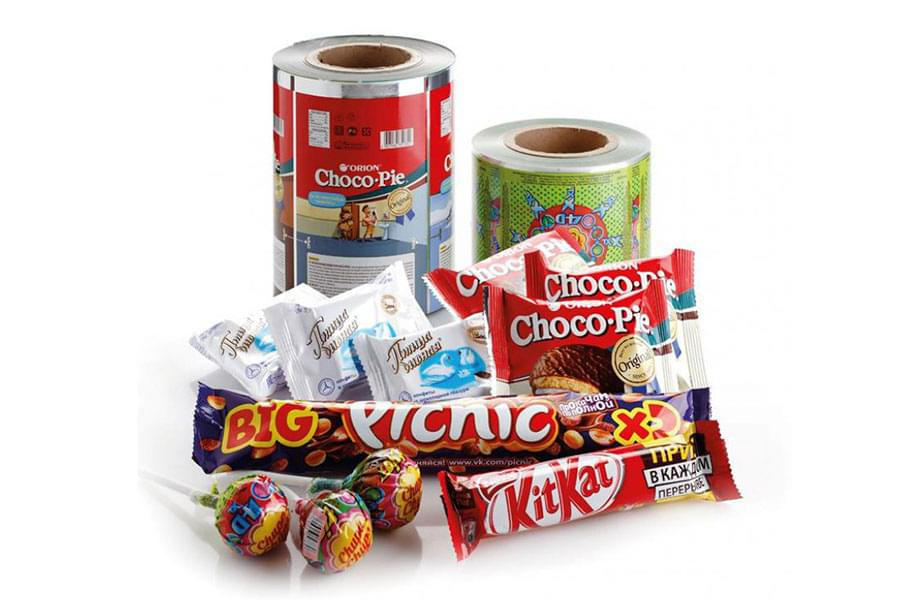
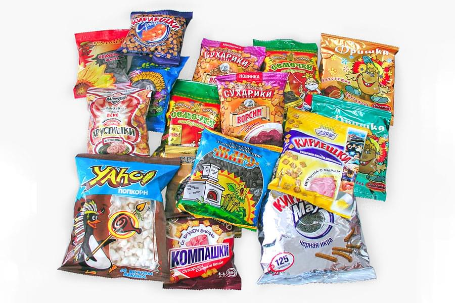
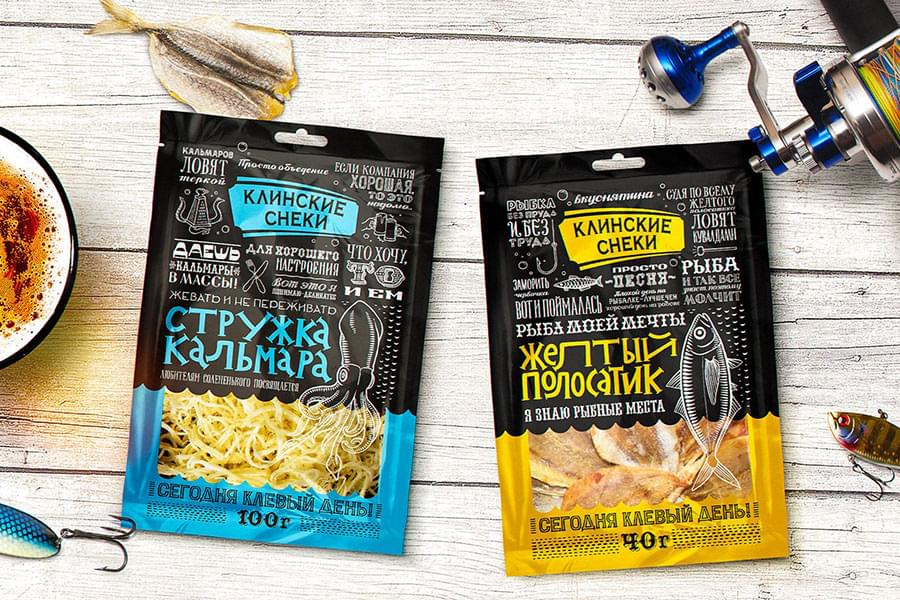
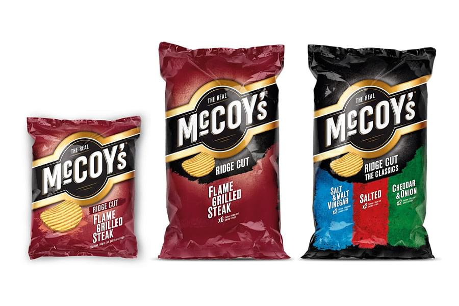
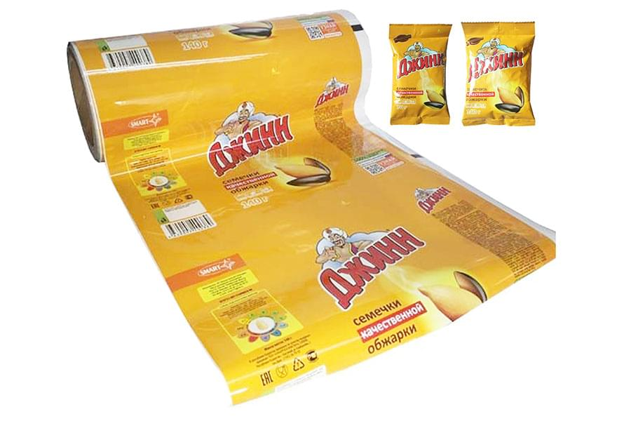
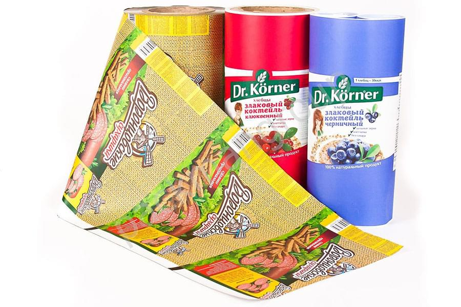

<!--#set var="title" value="Однослойные и многослойные пленки • НекстПринт" -->
<!--#include virtual="/parts/header.html" -->
<section class="brand">
    <div class="container">
        <div class="title title_multi"><h3>Однослойные и многослойные пленки</h3></div>
        <div class="swiper-container mySwiper">
            <div class="swiper-wrapper">
              <div class="swiper-slide">
                <a data-fancybox="gallery" data-src="images/dist/multi-film-1.jpg">
                    
                </a>
              </div>
              <div class="swiper-slide">
                <a data-fancybox="gallery" data-src="images/dist/multi-film-2.jpg">
                    
                </a>
              </div>
              <div class="swiper-slide">
                <a data-fancybox="gallery" data-src="images/dist/multi-film-3.jpg">
                    
                </a>
              </div>
              <div class="swiper-slide">
                <a data-fancybox="gallery" data-src="images/dist/multi-film-4.jpg">
                    
                </a>
              </div>
              <div class="swiper-slide">
                <a data-fancybox="gallery" data-src="images/dist/multi-film-5.jpg">
                    
                </a>
              </div>
              <div class="swiper-slide">
                <a data-fancybox="gallery" data-src="images/dist/multi-film-6.jpg">
                    
                </a>
              </div>
            </div>
            <div class="swiper-pagination"></div>
            <div class="swiper-button-prev"></div>
              <div class="swiper-button-next"></div>
        </div>
        <p>
            Такая упаковка с нанесенной на нее печати обладает рядом неоспоримых преимуществ. Благодаря применению на производстве специальных лаков и полимеров для создания покрытия толщиной от 2,5 до 112 мкм, полученная пленка характеризуется легкостью спайки и нечувствительностью к влаге и газам.
        </p>
        <p>
            В настоящее время уже разработаны новые стандарты на производство гибкой упаковки, которые отвечают всем современным требованиям рынка. Так, упаковочная продукция стала тоньше, прозрачнее, а, значит, экологичнее, сохранив при этом присущую ей прочность, влагостойкость и газонепроницаемость. Гибкая упаковка сохраняет отменный внешний вид на протяжении всего срока эксплуатации.
        </p>
    </div> 
</section>
<!--#include virtual="/parts/consultation.html" -->
<!--#include virtual="/parts/footer.html" -->